ИИ-менеджер по продажам
Сам выходит на контакт и ведёт клиента к заявке.
- Инициирует коммуникацию
- Работает по холодной базе
- Реанимирует «спящих» клиентов
- Обладает полнотой знаний
- Работает с CRM и другими системами
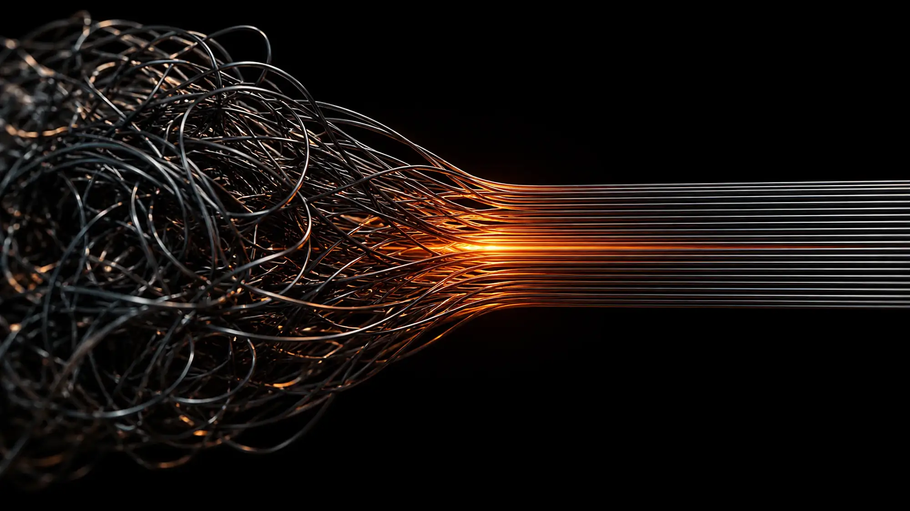
Виртуальные сотрудники для активных продаж, клиентской поддержки и внутренних процессов. Запутанное остаётся у нас. Вам достаётся результат.
[01] Задача
Холодные базы, однотипные вопросы, отчёты, согласования. За каждым процессом стоят десятки шагов, которые съедают рабочий день. Мы передаём эти шаги виртуальным сотрудникам: они работают автономно, по должностной инструкции, как полноправные участники процесса.
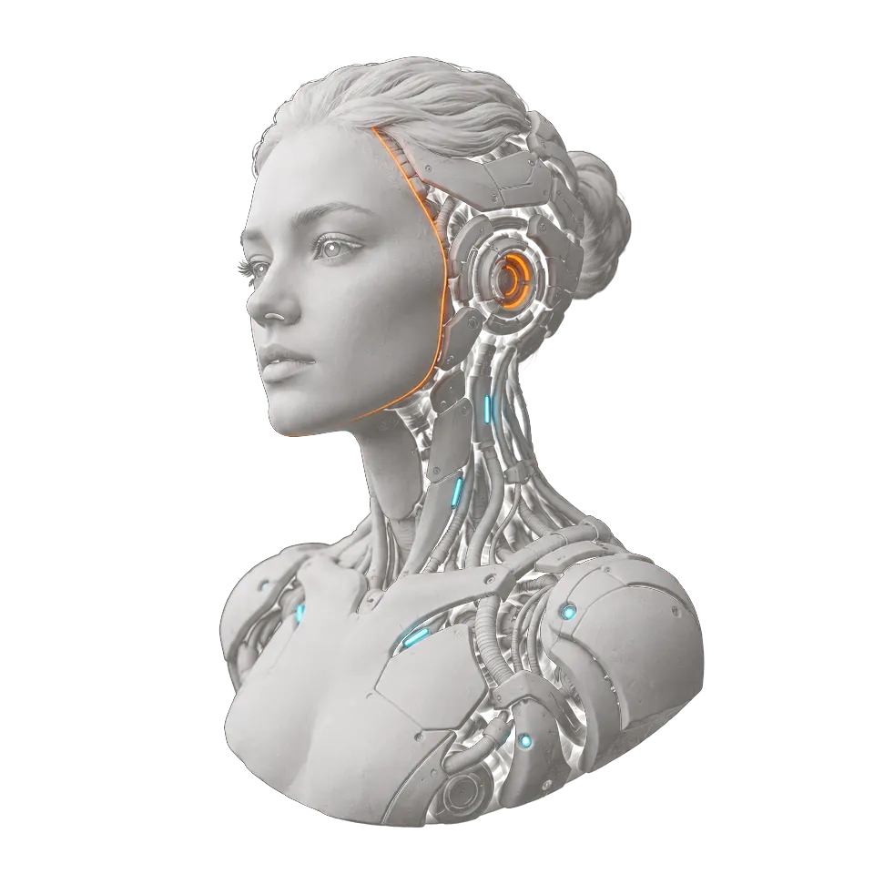
[02] Кто это
Для клиента это вежливый собеседник, для вас система с чётким кругом задач. Работает в автономном режиме, как полноправный участник процесса.
Инициирует коммуникацию, работает по холодной базе, реанимирует «спящих» клиентов, работает с CRM.
[03] Каталог решений
Масштабируемые ИИ-решения АИТЕХ: начните с одной роли и нарастите до кластера виртуальных отделов.
Сам выходит на контакт и ведёт клиента к заявке.
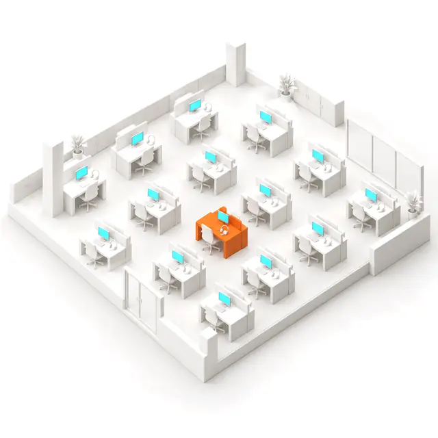
Команда агентов закрывает воронку от лида до передачи менеджеру.
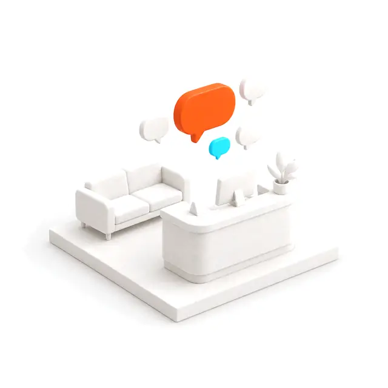
Мгновенно отвечает и всегда говорит в корпоративном стиле.
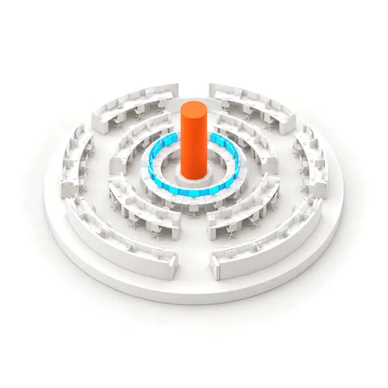
Голос, мессенджеры и почта в одном контуре, без смен и очередей.
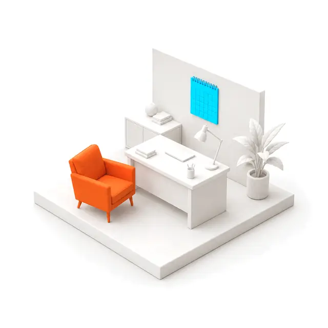
Правая рука руководителя и команды: голосом и текстом.
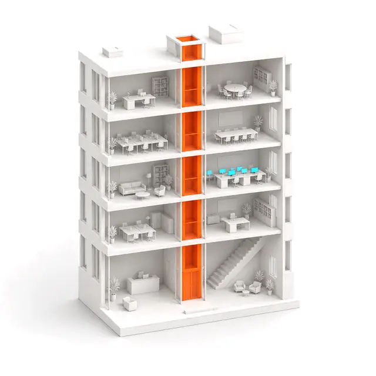
Соединяет отделы и даёт сотрудникам быстрые ответы.
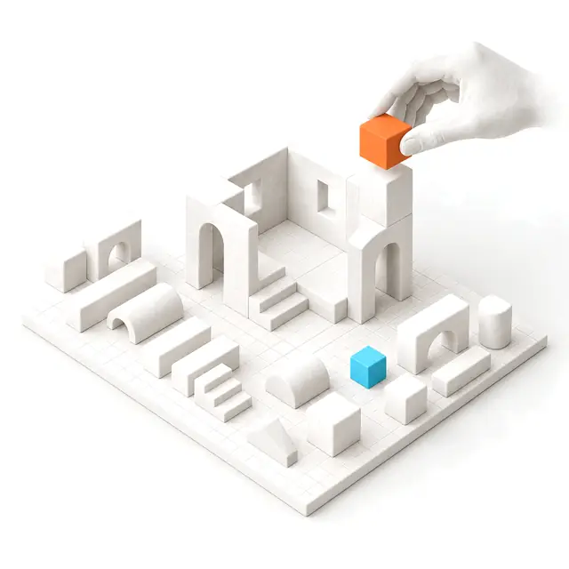
Создадим персонального агента под ваши требования и задачи.
Ещё в штате
Информация о стоимости составляет коммерческую тайну и не может быть опубликована.
[04] В работе
[05] Внутри агента
[06] Отрасли
01 / 06
Линия одна на всех, задачи разные. Смотрим на процесс: где узел, где обрыв, где лишний шаг. Дальше агент берёт эти шаги на себя.
ЛистайтеИИ точно выявляет потребности клиентов, персонализирует предложения в реальном времени и оптимизирует весь путь клиента: от привлечения до повторных продаж.
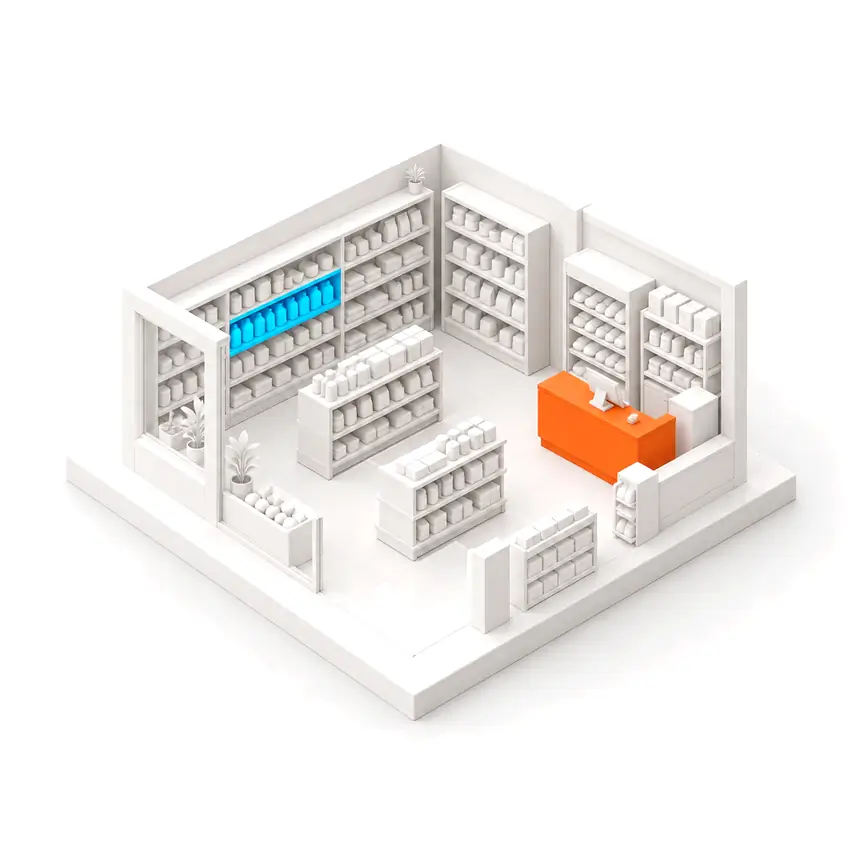
ИИ прогнозирует поведение аудитории, выявляет скрытые паттерны и адаптирует коммуникации в реальном времени. Выше релевантность, ниже затраты.
Автоматизирует процессы, снижает издержки, ускоряет привлечение и управление рисками. Даёт поддержку 24/7 и рост выручки за счёт клиентского опыта.
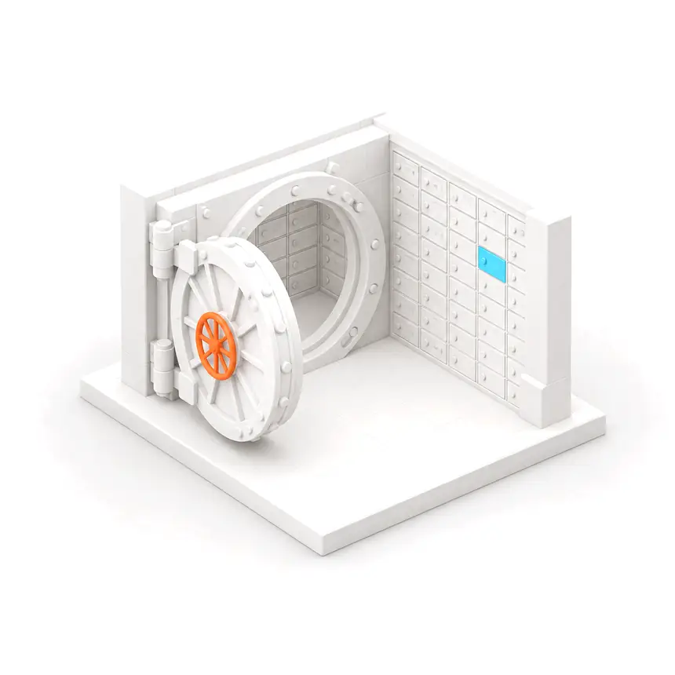
Снижает издержки через предиктивное управление и профилактику инцидентов. Клиентский опыт лучше, отток ниже, жизненный цикл клиента длиннее.
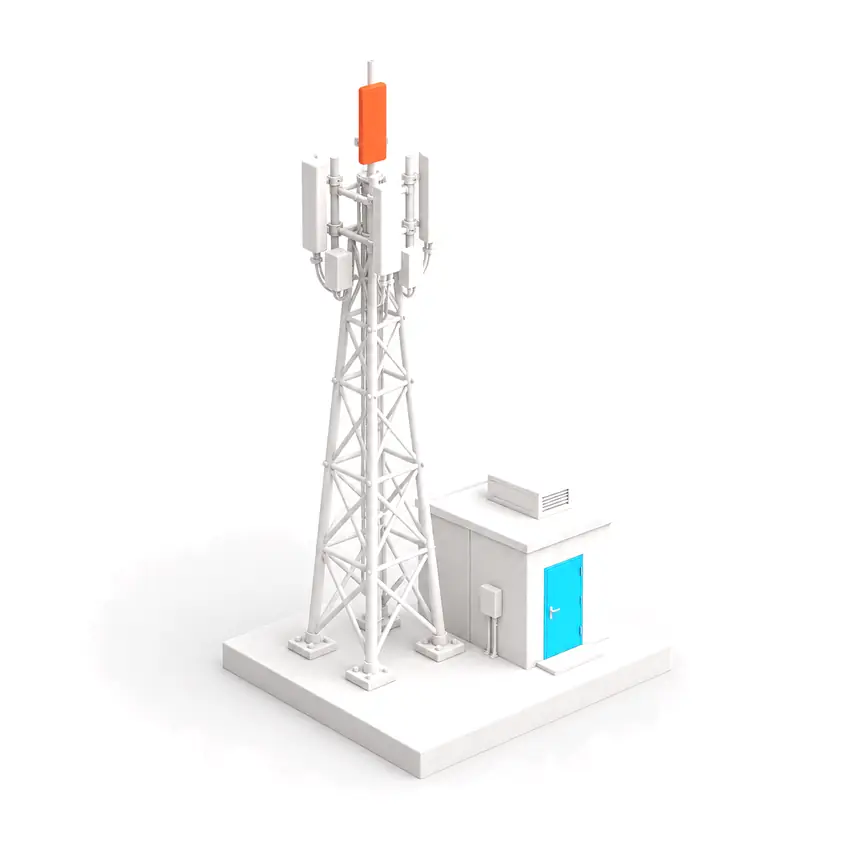
Полная автоматизация взаимодействия с клиентом: персональные предложения, динамическое ценообразование, управление заказами, оплатой и логистикой.
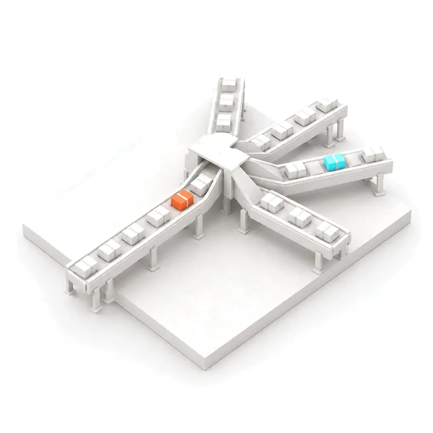
ИИ трансформирует бизнес-модели от логистики до энергетики: оптимизация, рост прибыли и поиск новых точек роста.
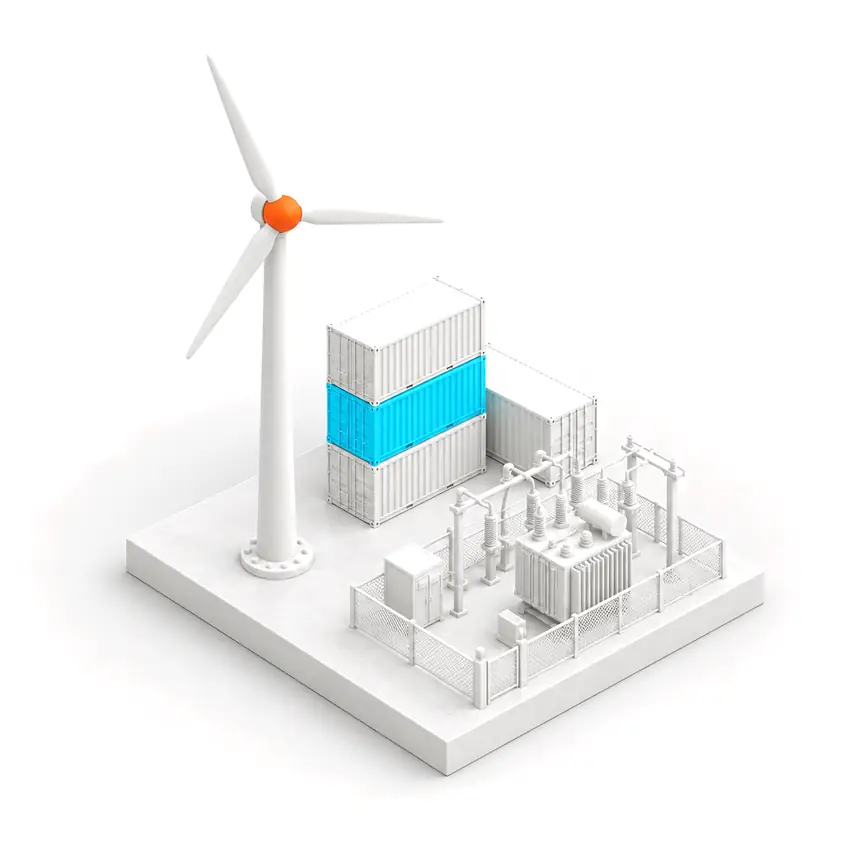
[07] В цифрах
3,7×
Столько в среднем приносят инвестиции в ИИ на каждый вложенный рубль
[08] Результат
Задача
Показатели условные, для макета. На рабочем сайте здесь будут цифры из реальных внедрений.
[09] Как работаем
Агента под конкретные задачи, с учётом специфики отрасли и ваших бизнес-процессов.
В существующие системы и рабочие процессы, чтобы решения принимались быстрее.
Постоянный мониторинг работы агентов, консультации и оперативное устранение сбоев.
Глубокая автоматизация: прогнозирование сценариев и персонализация взаимодействия.
[10] Вопросы
Это рабочий персонал на базе искусственного интеллекта, оснащённый интеллектуальными инструментами. ИИ-агенты работают совместно в мультиагентной системе для автономного решения сложных задач.
Интеллектуальные системы, которые самостоятельно принимают решения и выполняют бизнес-задачи без постоянного участия человека. В отличие от роботизированной автоматизации (RPA), агент адаптируется, работает в условиях неопределённости и реагирует на изменения в реальном времени. Например, ИИ-продавец сам ведёт переговоры, адаптирует предложения и управляет воронкой продаж.
В проактивности и способности к обучению. RPA и чат-боты реагируют на запросы по жёстким сценариям, а ИИ-агент сам инициирует взаимодействие и непрерывно учится на реальных диалогах. Он способен вести сложные нелинейные переговоры и выступает автономным бизнес-юнитом.
Сложность0%
Опишите процесс как есть. Покажем, какие шаги можно отдать виртуальному сотруднику и что останется вашей команде.
Раздел
Это демонстрационный макет: пока собрана только главная страница. Остальные разделы появятся после утверждения концепции.